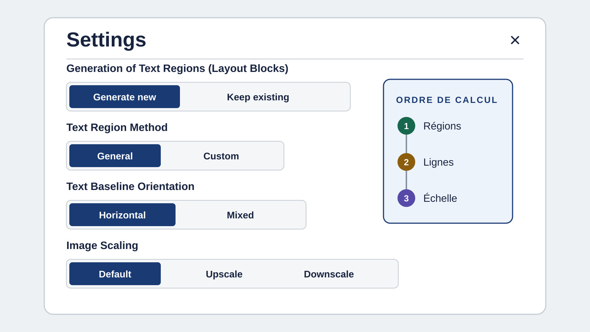
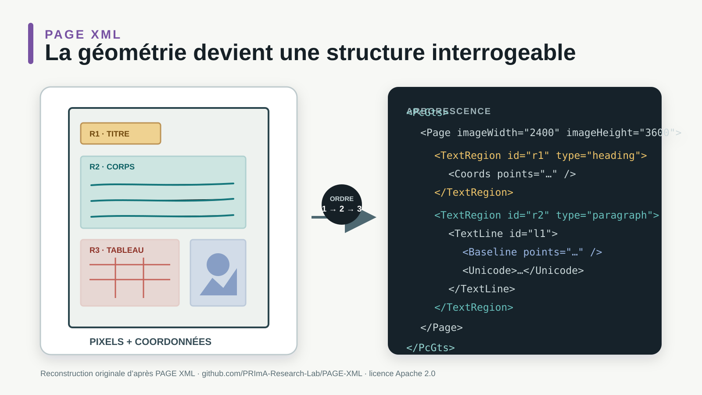
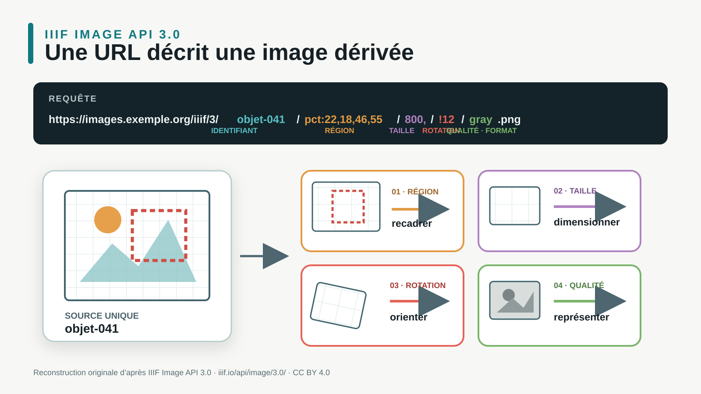
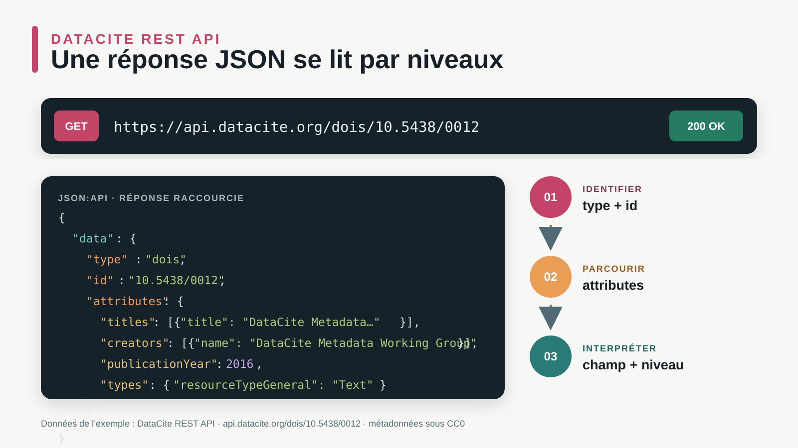

01microparticules
02micro particu1es
030 résultat
- Le fichier peut ne contenir qu’une image.
- La zone peut avoir été mal segmentée.
- L’OCR peut avoir produit une autre suite de caractères.
- Le moteur peut n’interroger que la notice.
Une page affichée devient recherchable après une chaîne de transformations. La séance suit cette chaîne tout en conservant l’origine du document.
Deux fichiers qui s’ouvrent de la même manière peuvent offrir des possibilités radicalement différentes : texte sélectionnable, image seule, ordre de lecture incohérent ou couches mêlées.

Si un tableau est pris pour une image décorative, aucun de ses nombres ne rejoint l’OCR. Le problème n’est plus un caractère faux, mais une région complètement absente de l’index.

L’API Image IIIF définit une URL où la région, la taille, la rotation, la qualité et le format décrivent l’image demandée. Le détail devient une ressource partageable.

